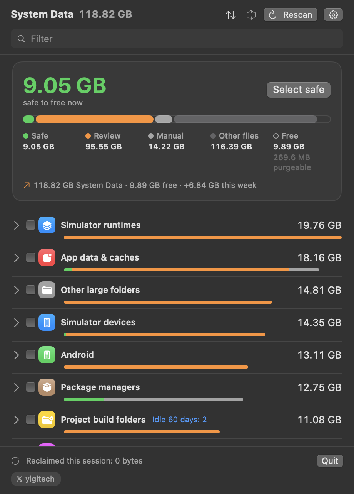

macOS calls it System Data. This app opens it.
Storage settings puts everything it cannot name into one grey bar. System Data Unpacked shows what is inside — simulators, Xcode builds, package caches, AI models, backups — and lets you delete it item by item, or shrink it without deleting anything, with every command shown first.
- Project build folders node_modules, .next23.8 GB
- Simulator devices19.5 GB
- Simulator runtimes15.9 GB
- Package managers Homebrew, uv13.3 GB
- AI models and tools8.1 GB
- Caches that rebuild6.6 GB
- Everything else20.7 GB
brew install --cask jarvis322/tap/sysdata
It never deletes anything you did not click.
Every item carries one of three badges, and every command is shown before it runs, including the ones that ask for your password.
Rebuilds on its own: caches, build products, logs. Deleting it costs a rebuild and nothing else.
Worth a look first: a simulator with apps on it, a model you downloaded. It goes to the Trash unless you choose to delete it now.
Not the app's to remove: a Homebrew install, a local snapshot. You get the exact command instead.
Or keep it, at half the size.
Some of it you would rather not delete: an SDK, an archive, a project you will come back to. Shrink stores the same files compressed, the way macOS stores its own. They stay where they are and open as before.
- Before
- 454 MB
- After
- 224 MB−230 MB
- Offered where it lasts. SDKs, Xcode archives, old IDE versions and toolchains, dependencies a week after install, build output once a project goes quiet.
- Nothing is deleted. A compressed copy is written beside the folder, checked against it, and swapped in at once. If anything goes wrong, the folder stays as it was.
- It says no when it should. Folders that share their files with others, such as pnpm's hard links, are left alone, because compressing them would take more space, not less.
One window for the whole disk.
Open it from Applications or keep it in the menu bar. It scans in the background and remembers what changed.

- Free up an amount
- Ask for 20 GB and it selects the least worrying items that add up to it: safe ones first, then what has sat untouched longest.
- Projects, not folders
- One row per project with everything it costs: node_modules, build output, its DerivedData, its Docker images. Archive one in a click; source files are never touched.
- Why it grew
- A trend on every row, System Data over time, and a note when a category grows unusually fast, with the items behind it.
- AI models, one by one
- Ollama and Hugging Face models listed separately, sized without double counting shared layers, removed the way each tool expects.
- See it before it goes
- The confirmation names every item with its size and badge, lets you pick the Trash or delete now, and shows the exact commands.
- Touch ID before a delete
- An optional check with Touch ID, your Apple Watch or your password, so a click at an unlocked Mac is not enough. When macOS asks for your password anyway, it asks once.
- External drives
- Optionally looks for projects on plugged-in drives too. Time Machine disks and network shares are never walked.
- Stays on your Mac
- No account and no analytics. The only request it can make is an update check, off by default.
- Scriptable
--jsonprints the inventory,--cleanshows the weekly clean and--clean --applyruns it. Shortcuts and a desktop widget too.
What it finds
- Simulator devices and runtimes
- Xcode DerivedData, archives, device support
- npm, pnpm, yarn, Cargo, uv, pip and Homebrew caches
- Ollama, Hugging Face and LM Studio models
- Claude Code, Codex and Gemini data
- Docker images, volumes and VM disks
- iOS device backups
- Time Machine local snapshots
- Logs, diagnostics and temporary files
- Project build folders: node_modules, .build, Pods, .next
- Android SDKs and emulators
- JetBrains IDE caches and old versions
- Unity caches and editors
- Logic Pro and GarageBand sound libraries
- WhatsApp chats and media
- Anything else large it cannot explain
What System Data actually is
The short version is below. The full guide to macOS System Data covers what fills it on a real Mac, the Terminal commands that show each part, and what is safe to clear.
What is System Data on a Mac?
It is the name Storage settings gives to everything it cannot file under Apps, Photos or Documents: caches, logs, simulator runtimes, local Time Machine snapshots, disk images, mail attachments, application support folders. It is not one thing, which is why the number gets large and why macOS shows you a bar instead of a list.
Why is my System Data so large?
On a Mac used for development it is usually a handful of folders: Xcode DerivedData and archives, simulator runtimes, npm and Homebrew caches, Docker disks, downloaded models. Each regenerates on demand, and together they pass 100 GB without anything being wrong.
Can I delete System Data?
Parts of it. Caches and build folders come back on their own, so removing them costs you a rebuild and nothing else. Snapshots and device backups are a decision rather than a cleanup. Nothing in macOS tells you which is which — this app labels every item before you touch it, and shows the command it will run.
How do I clear System Data on a Mac?
Find out what it is made of first, because the answer differs from Mac to Mac. Storage settings cannot tell you, so open System Data Unpacked: it lists every part with its size and a badge. Delete the ones marked Safe, which rebuild on their own, look at the ones marked Review, and leave snapshots and backups for last. Emptying the Trash afterwards is what gives the space back.
Can I free space without deleting anything?
Yes, for folders that are mostly read: SDKs, archives, old IDE versions, a project's dependencies. Shrink stores them compressed with the same file system compression macOS uses for its own files, often at around half the size. The files stay where they are and open as before; nothing is deleted.
Why does it ask for Full Disk Access?
Most of System Data sits in folders macOS protects, and without the grant they cannot even be measured. The app reads sizes and dates, not the contents of your files, and never your mail, messages or browsing history. It works without the grant too, with those places left out.